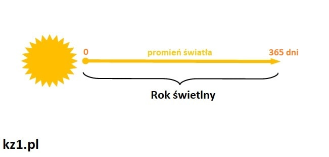
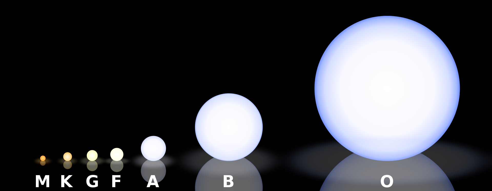
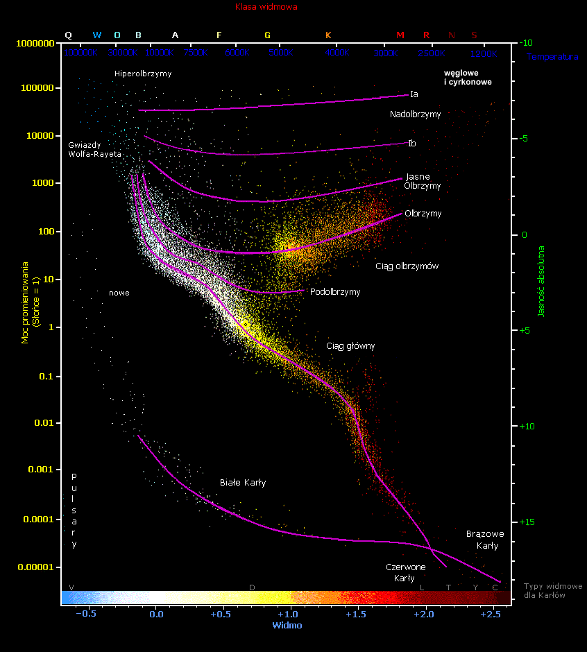

Rok świetlny
Rok świetlny – jednostka odległości stosowana w astronomii. Jest równy odległości, jaką pokonuje światło w próżni w ciągu jednego roku juliańskiego (365,25 dnia, 31 557 600 sekund).
W przeliczeniu na inne jednostki: 1 rok świetlny = 0,3066 pc = 63241 au = 9,4607×1015 m czyli
≈ 9,5 petametra (Pm)
≈ 9,5 biliona km
≈ 9,5 biliarda m.

Gwiazda
kuliste ciało niebieskie, stanowiące skupisko powiązanej grawitacyjnie materii. Przynajmniej przez część swojego istnienia emituje w sposób stabilny promieniowanie elektromagnetyczne (w szczególności światło widzialne). Gwiazdy powstają głównie z wodoru i helu, lecz w trakcie życia przybywa w nich atomów cięższych pierwiastków (tzw. metali).
Gwiazda powstaje wskutek zapadania grawitacyjnego chmury materii złożonej głównie z wodoru. Gdy jądro gwiazdy osiągnie dostatecznie dużą temperaturę i gęstość, rozpoczyna się reakcja fuzji jądrowej stopniowo zamieniająca wodór w hels. Wytworzona w tym procesie energia jest przenoszona ku powierzchni poprzez promieniowanie oraz drogą konwekcji. Ciśnienie wewnętrzne zapobiega dalszemu zapadaniu się pod wpływem grawitacji. Gdy wodór w jądrze ulegnie wyczerpaniu, dalszy rozwój gwiazdy zależy od jej masy – może zakończyć się np. w stadium białego karła bądź czarnej dziury. Część materii zostanie zwrócona w przestrzeń, gdzie utworzy kolejne pokolenie gwiazd o większej zawartości ciężkich pierwiastków.

Typ widmowy
klasyfikacja gwiazd oparta na widmie światła wysyłanego przez gwiazdę. Widmo światła emitowanego przez gwiazdę jest określone przez trzy podstawowe parametry atmosfery gwiazdy, a mianowicie: temperaturę, ciśnienie gazu, skład chemiczny.
Z powyższych czynników największy wpływ na postać widma gwiazdowego ma temperatura. Widma gwiazd o niskiej temperaturze powierzchni świadczą o obecności tam prostych związków chemicznych. Wraz ze wzrostem temperatury spada liczba cząstek, a atomy ulegają jonizacji.
Temperatura fotosfery określa również barwę emitowanego światła, stąd wyraźny związek pomiędzy poszczególnymi typami widmowymi a barwą gwiazdy.

Diagram Hertzsprunga-Russella (H-R)
wykres klasyfikujący gwiazdy. Został skonstruowany w 1911 r. przez E. Hertzsprunga, a w 1913 r. udoskonalony przez H.N. Russella.
W wykresie tym na jednej z osi układu współrzędnych zaznaczony jest typ widmowy (lub temperatura fotosfery albo wskaźnik barwy), natomiast na drugiej osi naniesiona jest jasność absolutna (lub moc promieniowania). Na diagramie H-R gwiazdy grupują się w pewnych obszarach. Większość gwiazd tworzy tzw. ciąg główny (rozciągający się wzdłuż przekątnej od prawego dolnego do lewego górnego rogu wykresu). Jest on tworzony głównie przez młode gwiazdy (I populacji). Gałąź leżąca bezpośrednio poniżej ciągu głównego, to gałąź podkarłów (gwiazd II populacji). Na lewo i poniżej ciągu głównego znajduje się grupa białych karłów, natomiast nad ciągiem głównym znajdują się kolejno od prawej grupy: podolbrzymy, olbrzymy, jasne olbrzymy i nadolbrzymy.

Absolutna wielkość (jasność) gwiazdowa
obserwowana wielkość gwiazdowa (a zatem wyrażona w magnitudo), jaką miałby obiekt oglądany z pewnej ustalonej odległości przy braku pochłaniania światła w przestrzeni międzygwiezdnej. W przypadku obiektów poza Układem Słonecznym przyjęto jako odległość odniesienia 10 parseków.
Wzór:
M = m - 5(log(r)-1)
- M
wielkość absolutna obiektu, zdefiniowana jako wielkość obserwowana z odległości 10 pc
- m
wielkość obserwowana
- r
odległość pomiędzy obserwatorem a obiektem, wyrażona w parsekach